1 · Start and mark
Tap Rest start, Training start, Recovery start as your protocol progresses – one tap marks every recording.
 /
/
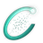
CARLON HRV Research
Up to four Polar H10 or Movesense Flash sensors record in their own memory – the iPhone doesn’t need to be there. Mark each phase with one tap and leave with original RR data, values per phase and publication-ready figures.
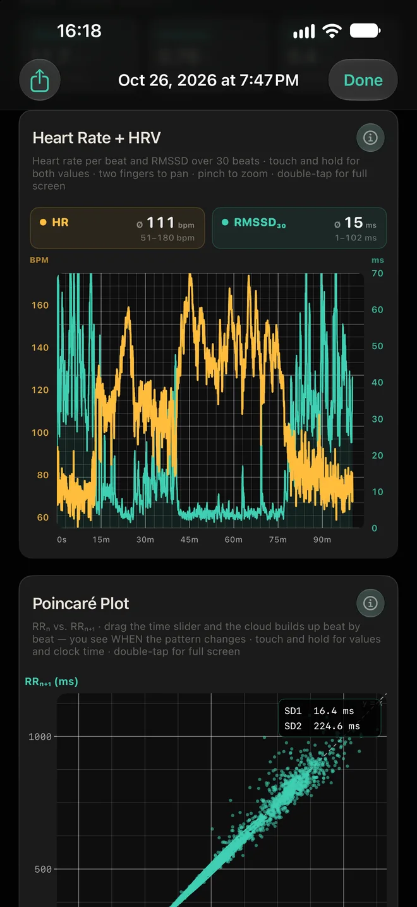
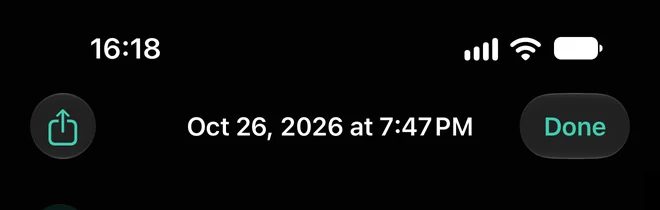
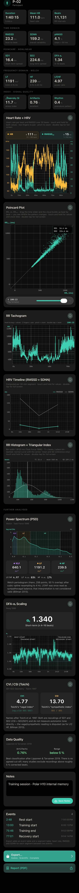

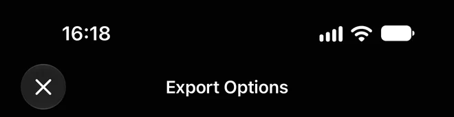
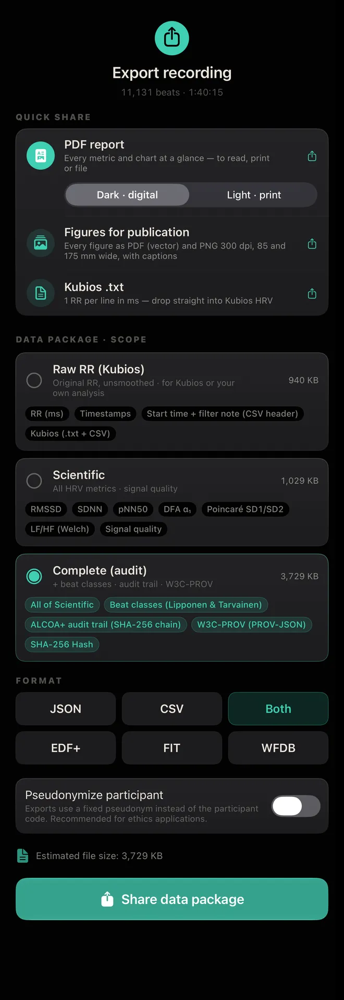

Watch heart rate and HRV live while you work with a client or participant – or let Polar H10 and Movesense Flash record into their own memory while the iPhone stays behind. Or both at once: if Bluetooth drops, the strap simply keeps recording.
Heart rate and HRV on screen as it happens – show your client their body’s response in real time. First values after 20 seconds, steadier with every minute.
Start, and the iPhone doesn’t need to be there: overnight, on the track, a whole field day. Read out afterwards.
With Polar H10 the live view runs alongside the strap recording. If Bluetooth drops, the live view pauses – the strap keeps every beat.
Up to 95,000 beats in the sensor’s own memory – about 20 h of everyday life, about 10.5 h at 150 bpm. One recording per strap.
Raw ECG at 256 Hz plus 9-axis motion – the most data-rich mode, all in the sensor. The app derives RR from the ECG when reading out.
Each recording is matched to its participant with its real start time – no manual alignment.
Capacities: Polar H10 stores up to 95,000 RR intervals offline – about 20 h of everyday life (Krummenacher et al. 2025), about 10.5 h at 150 bpm; Polar’s 30 h refer to heart rate once per second. Movesense Flash: 128 MB; measured 2.9 kB/s with the app’s ECG 256 Hz + 9-axis motion 52 Hz – about 11 h, as the logger slows near 125 MB (Movesense); the manufacturer’s 60 h refer to ECG alone.
Both read the heart's electrical signal at the chest – the practical standard for reliable HRV outside the lab, where optical wrist and ring sensors fall short in motion. The app is tested with both, and they can run side by side in one study.

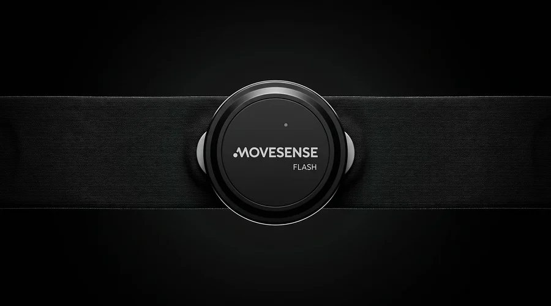
Polar H10 validity against ECG: Gilgen-Ammann et al. 2019; Schaffarczyk et al. 2022.
The measurement takes an hour. The work around it often takes longer – this is what the app takes off your hands.
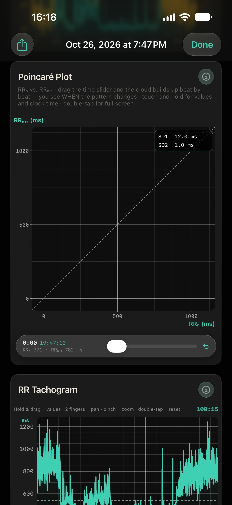
A 100-minute session – rest, training, recovery – from one Polar H10. The time slider rebuilds the Poincaré cloud beat by beat; touch and hold to read any beat with its clock time.
Drag the time slider – the cloud builds up beat by beat. Then press and hold on the cloud: the crosshair shows each beat with its clock time.
The app's Poincaré card with a real recording: Polar H10 internal memory, 100 minutes, 11,131 beats. Background = app screen; points and SD values are the app's own pairs, drawn live.
Tap Rest start, Training start, Recovery start as your protocol progresses – one tap marks every recording.

After read-out, each recording opens with its participant, real start time and every metric at a glance – time domain, Poincaré, DFA α1, frequency domain and signal quality.

Heart rate and HRV together over the whole session – touch and hold for values.
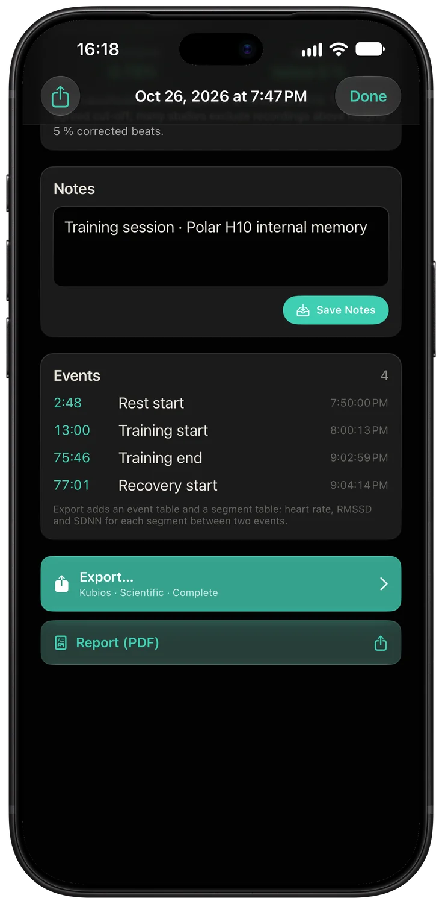
Every event with its clock time – and a segment table with values per phase in the export.
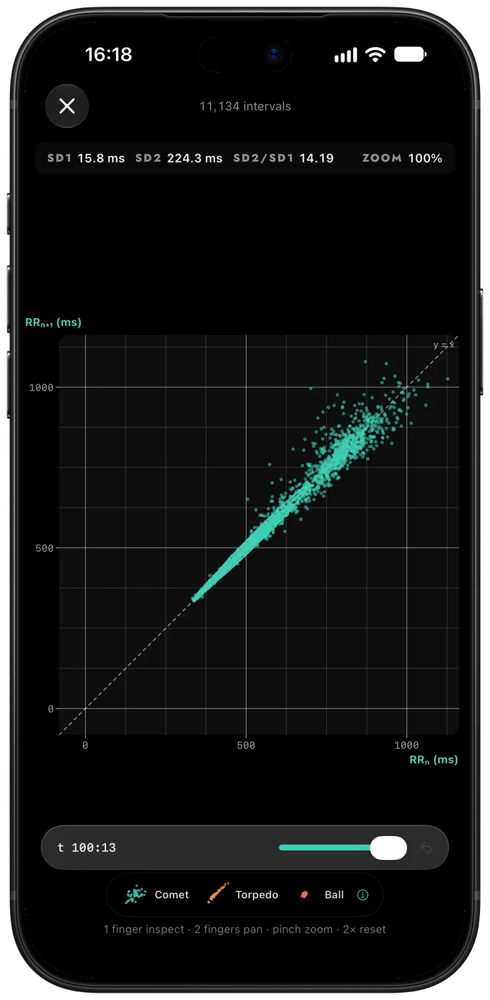
Every chart full screen, portrait or landscape: Poincaré, tachogram, spectrum, DFA α1 over time – each with method and source.
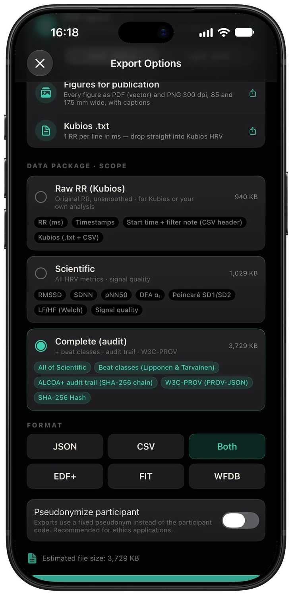
PDF report, figures for publication, Kubios, and data packages as JSON, CSV, EDF+, FIT or WFDB – shared from the iPhone.
Screens from the app with real recordings. The app interface is in English.
Original data for your analysis – plus everything you would otherwise build by hand.
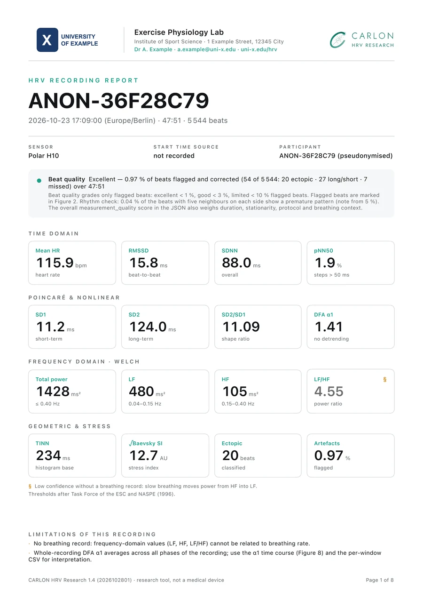
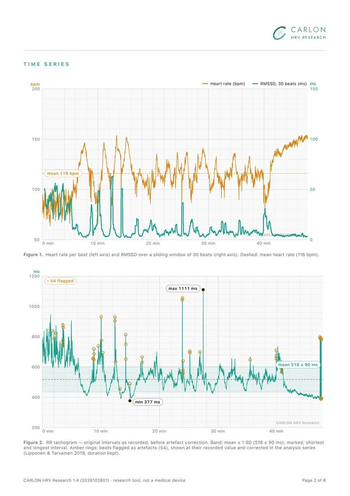
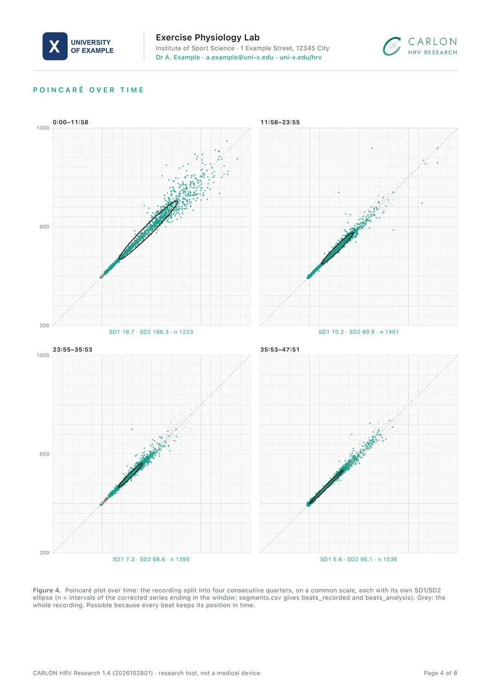
A real 48-minute gym session up to 155 bpm from a Polar H10: every export format, the PDF report and the figures – open it in Kubios, Python or R and check for yourself. CC BY 4.0.
Every report ends with this paragraph – every parameter, every reference, the exact app build. Here is the one for the example recording; yours carries your own values.
RR intervals were recorded with a Polar H10 (recording path not stored with this recording; RR resolution in the data: 1 ms) and processed with CARLON HRV Research, version 1.4, build 2026102801 (Rohwedder, 2026). The recording comprises 11131 RR intervals over 6015.5 s (sum of intervals), starting 2026-10-26 19:47:13 Europe/Berlin (UTC+01:00; start time source not recorded). Beats were classified with the algorithm of Lipponen and Tarvainen (2019) (α = 5.2, 91-beat windows, c₁ = 0.13, c₂ = 0.17; implementation verified beat for beat against NeuroKit2 signal_fixpeaks), with both thresholds bounded below at 30 ms so that beat-to-beat changes smaller than 30 ms, typical of exercise, are not classified as artefacts (see the app's validation report). 0.76 % of beats were flagged. Each run of consecutive flagged intervals was replaced by equal intervals of the same total duration, their number given by whole multiples of the local rhythm where every interval of the run is one (missed beats), otherwise by the classification (one fewer per extra beat, otherwise the same, so a premature beat and its compensatory pause are averaged); normal beats were left unchanged and the duration of the recording was preserved, except for single flagged intervals without compensation, which were replaced by the mean of their neighbours. The per-beat classification and correction are included in the complete export. Mean heart rate was computed as 60 000 / mean RR over all original intervals; SDNN, RMSSD, pNN50 and the Poincaré descriptors SD1 and SD2 (Brennan et al., 2001) were computed on the corrected series. Spectral power was estimated over the whole corrected series with Welch's method (symmetric Hann window of 256 samples = 64 s, 50 % overlap, segment mean removed, density scaling) after natural cubic-spline resampling at 4 Hz; band powers were integrated exactly at the band limits (LF 0.04–0.15 Hz, HF 0.15–0.40 Hz; Task Force, 1996). Baevsky's stress index is reported as √SI with SI = AMo / (2 · Mo · MxDMn) (Baevsky, 1984): histogram of the corrected series with 50-ms bins on the absolute grid (…, 600–650, 650–700 ms …; Baevsky and Kubios convention); Mo = centre of the tallest bin (s), AMo = its share of beats (%), MxDMn = range of the series (s); from 10 min of recording the median over consecutive 5-min windows. Short-term fractal scaling (DFA α1) was computed over windows of 4–16 beats on the whole recording without prior detrending (Peng et al., 1995). Time-varying DFA α1 (Figure 8) followed Rogers et al. (2026): 120-s windows recomputed every 5 s on the corrected series after smoothness-priors detrending (Tarvainen et al., 2002; λ = 500, the Kubios default, as the review does not specify λ); windows with 5 % or more corrected beats were omitted, between the 3 % level with small bias and the 6 % level with proportional bias in Rogers et al. (2021) and in line with the exclusion criterion of Schaffarczyk et al. (2022). Segments (Figure 7) and the 60-s epochs of the data export use fixed time grids; a beat belongs to the window in which its interval ends. The RMSSD trace in Figure 1 uses a sliding window of 30 beats as a display aid only. The app's computations were validated against NeuroKit2 (331 of 331 checks passed; CARLON HRV Research validation report). Original RR intervals were retained unaltered for export.
The app stores what the sensor measured – nothing else. Every metric is computed fresh from those originals, so methods can improve without your data ever being touched.
RR intervals are kept exactly as recorded – never smoothed, corrected or overwritten.
An improved method applies to every recording you have ever made – open or re-export it to get the latest analysis.
Every export names the app version and the exact method. Anyone can recompute it with open tools – for peer review, replication or new methods.
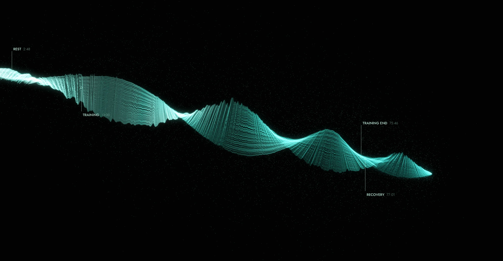
The measure exercise science uses to follow intensity – computed in 2-minute windows every 5 seconds, as in Kubios. Windows with 5 % or more corrected beats are marked invalid, never silently dropped, and every window is a row in your CSV.
Each metric is recomputed by an independent reference with the same definition and parameters. The dossier names every check and every tolerance.
checks passed against NeuroKit2, SciPy and Task Force definitions
series with artifact detection identical to NeuroKit2, beat by beat
beats in synthetic test vectors and real Polar H10 / Movesense recordings
Several athletes per session, phases marked live, DFA α1 over time for intensity research.
Every new recording copied to a study folder you choose in the Files app – iCloud Drive or your institute's cloud – for multi-site studies. Volume licenses through Apple School or Business Manager.
A methods paragraph to cite, figures in journal widths, and data your supervisor can recompute.
No account, no CARLON server, pseudonymous IDs and an append-only audit trail for every record.
Heart rate and HRV live during the session with your client – and a PDF report to hand over afterwards.
Small groups of up to four athletes per session from one iPhone, each recording matched to its person with its real start time.
CARLON HRV Research records, organises and documents; Kubios HRV remains a reference for analysis. The CSV carries the exact settings for the Kubios custom text import, so your recordings open there without manual editing – and the app's own metrics are there as a cross-check.
Two sensors, both tested with the app: the Polar H10 chest strap – live and in its internal memory – and the Movesense Flash sensor – live and recording in the sensor itself, where the app also saves raw ECG and 9-axis motion (accelerometer, gyroscope, magnetometer) as CSV. Both can run side by side in one study.
Polar H10: up to 95,000 beats in the sensor – about 20 hours of everyday life, about 10.5 hours at 150 bpm; one recording per strap. Movesense Flash: about 11 hours of ECG at 256 Hz plus motion in its 128 MB memory. The iPhone only needs to be nearby to start and to read out.
Up to four from one iPhone. They record to their own memory and are read out together afterwards; each recording is assigned to its participant with its real start time.
Yes. The CSV carries the exact settings for the Kubios custom text import in its header; the app also writes a Kubios text file and FIT. RR intervals are exported exactly as recorded.
Tap an event button at each phase change. The segment table lists duration, beats, heart rate, RMSSD, SDNN and pNN50 for every phase between two events, computed with the same validated code as the rest of the app.
Every metric is compared with independent reference implementations (NeuroKit2, SciPy, Task Force definitions) on 18 RR series with 20,431 beats: 331 of 331 checks passed (metric comparisons plus artifact, threshold and rhythm checks). Artifact detection matches NeuroKit2 beat by beat. The version-specific dossier lists every check with its tolerance.
Yes. The app stores only the original sensor data and computes every metric fresh from it, so an improved method applies to all past recordings. Open or re-export a recording to get the latest analysis; files you exported earlier stay unchanged and name the app version that produced them.
Yes. Every export contains the original RR intervals, each beat's artifact flag and correction, the app version and the exact method of every metric. With open tools such as NeuroKit2 or SciPy, anyone can recompute the values – the validation dossier shows how.
Only where you send it: an export, a study folder you choose, or your iPhone’s own backup. There is no account and no CARLON server – nothing reaches us.
No – CARLON HRV Research runs on iPhone with iOS 17 or later. The exported files open on any platform.
No. It is a research and wellness tool and does not diagnose or treat any condition.
During the beta, access is by invitation through Apple TestFlight. At launch it becomes a one-time purchase on the App Store – no subscription, no per-participant fees; institutions can buy licenses in volume through Apple School Manager or Apple Business Manager.
Testers told us where the work piles up in their studies. We built the answer with them – and now it saves every study the same steps.
Before: every recording marked by hand – or phase times on paper, aligned afterwards.
→ Now: group phase markers – one tap marks the phase in every running recording.
1 tap instead of 4Before: export the RR data, then cut rest, training and recovery by hand in a spreadsheet – per participant.
→ Now: the segment table – heart rate, RMSSD, SDNN and pNN50 for every phase, ready for the results table.
no spreadsheet stepBefore: convert the export before the institute’s tools can read it.
→ Now: EDF+ with the phase markers inside, plus FIT and WFDB for PhysioNet – straight from the iPhone.
no converterWe are opening the beta to labs, researchers and coaches who work with real data. Tell us where you work and which sensors you use, and you get a TestFlight invitation. Your field feedback shapes the next build.
No mail app on this computer? Write to jan@vitalkultur.com – Jan answers every request personally.
Page updated 28 Oct 2026 · app 1.4 (build 2026102801) · validation dossier 1.4
For research and wellness use. Not a medical device. Polar H10, Movesense and Kubios are trademarks of their respective owners; CARLON HRV Research is an independent app and not affiliated with them.